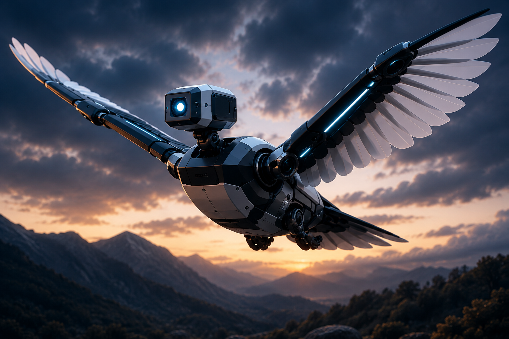
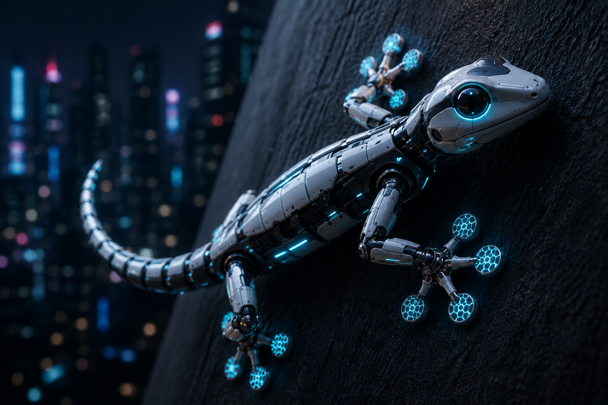
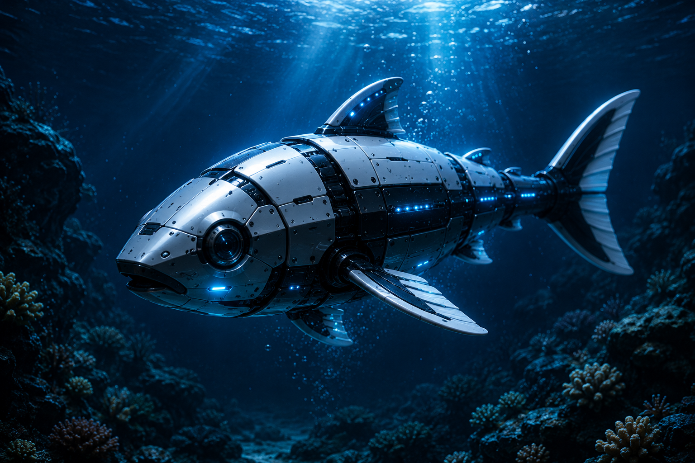
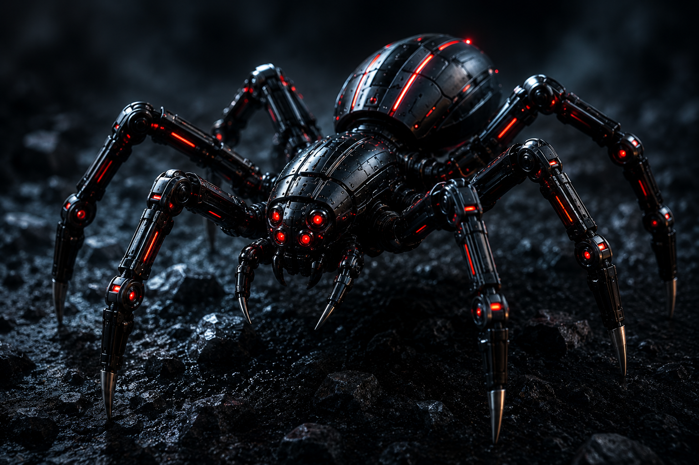

SYSTEM INITIALIZING...
CLICK ANYWHERE TO INITIALIZE
Exploring how biological systems inspire intelligent robotic engineering, autonomous navigation, machine learning, artificial intelligence, and adaptive robotic technologies used in surveillance, disaster management, underwater exploration, and advanced scientific research.
Bio Inspired Systems
Engineering Concepts
Autonomous Navigation
AI Integration
The objective of this project is to study how biological systems and animal behaviors inspire the development of autonomous robotic systems. Nature has evolved efficient movement, navigation, sensing, and survival mechanisms over millions of years.
This project combines biology with computer engineering by analyzing robotic technologies inspired by birds, geckos, fish, and spiders. These systems are used in rescue operations, underwater exploration, surveillance, and intelligent navigation.
The methodology of this project involves studying biological organisms and analyzing how their movement, sensing mechanisms, and adaptive behaviors can be replicated using engineering principles.
Research was conducted on birds, geckos, fish, and spiders to understand their locomotion systems, balance mechanisms, environmental adaptability, and survival strategies.
Based on these biological concepts, modern robotic technologies such as AI navigation, sensor systems, autonomous movement algorithms, computer vision, and machine learning techniques were analyzed and integrated into the website design.

Inspired by bird flight and wing aerodynamics.
Autonomous aerial robot inspired by bird wing movement, aerodynamic balancing systems, and intelligent flight navigation.

Designed using wall climbing abilities of geckos.
Intelligent climbing robot using adhesive technologies, AI balancing systems, and autonomous navigation.

Inspired by underwater propulsion and movement.
Underwater robot inspired by fish hydrodynamics, fin propulsion systems, and intelligent marine navigation.

Multi-legged robots for rough terrain navigation.
Multi-legged robotic system designed for terrain navigation, rescue missions, and military surveillance operations.
Birds are among the most efficient flying organisms found in nature. Their bodies are lightweight, aerodynamic, and structurally optimized for stable and energy efficient flight.
Birds use specially designed wing structures to generate lift and reduce air resistance during motion. Their feathers help control airflow while maintaining balance and stability in changing environmental conditions.
Birds also possess advanced vision systems and rapid reflex mechanisms that allow them to detect obstacles, calculate movement directions, and respond instantly to environmental changes.
These natural adaptations inspired engineers to study bird locomotion and apply similar concepts in autonomous aerial robotics.
Engineers use the biological principles of birds to design intelligent drones capable of autonomous navigation and stable flight control.
Modern bird inspired drones use aerodynamic wing structures, lightweight composite materials, AI based stabilization systems, gyroscopic balancing mechanisms, and real time environmental sensing technologies.
These drones integrate computer vision algorithms, machine learning models, GPS navigation systems, and obstacle avoidance technologies to perform autonomous operations in dynamic environments.
Engineers also study bird flocking behavior to develop swarm drone technologies where multiple drones communicate and coordinate efficiently with each other.
The integration of biology with computer engineering allows these robotic systems to achieve improved flight efficiency, intelligent navigation, adaptive movement, and energy optimization.
Bird inspired drones are widely used in surveillance, agriculture, military reconnaissance, environmental monitoring, aerial photography, disaster management, and delivery systems.
In agriculture, drones monitor crop health, irrigation systems, soil conditions, and environmental changes using advanced imaging sensors and AI analysis.
During rescue missions, autonomous drones can access dangerous locations, locate trapped victims, and provide real time data to emergency response teams.
Scientists also use bird inspired drones for wildlife observation, climate monitoring, forest analysis, and scientific research without disturbing natural ecosystems.
These technologies continue to play an important role in the future development of intelligent aerial robotics and autonomous engineering systems.
Geckos possess extraordinary climbing abilities that allow them to move across vertical walls and ceilings with remarkable stability.
Their feet contain millions of microscopic hair-like structures called setae, which create intermolecular adhesive forces known as Van der Waals forces.
These forces generate strong adhesion without the use of liquids or glue, allowing geckos to climb efficiently on smooth and rough surfaces.
Geckos also demonstrate excellent body balance, flexible limb movement, and rapid directional control while climbing.
Their biological movement systems inspired researchers to study advanced adhesion mechanisms and adaptive robotic locomotion systems.
Engineers use gecko inspired biological concepts to design climbing robots capable of moving across walls, glass surfaces, and difficult terrains.
These robots use synthetic adhesive materials, pressure sensors, AI based balancing systems, and robotic gripping mechanisms to maintain stability during movement.
Advanced gecko robots integrate computer vision technologies, motion control algorithms, and autonomous navigation systems to analyze surfaces and optimize climbing performance.
Engineers also use machine learning techniques to improve grip efficiency and adaptive movement in changing environments.
The study of gecko locomotion significantly contributes to robotics research involving terrain adaptability, wall climbing systems, and intelligent mobility technologies.
Gecko inspired robots are used in building inspections, hazardous environment exploration, military surveillance, industrial maintenance, and rescue operations.
These robots can access locations that are dangerous or inaccessible for humans.
In industrial environments, climbing robots inspect pipelines, high rise structures, bridges, and nuclear facilities.
Scientists are also developing gecko robots for space exploration missions where robots must move efficiently across complex surfaces in low gravity environments.
Fish are highly efficient underwater organisms capable of smooth and energy optimized movement in aquatic environments.
Their streamlined body structures reduce water resistance, while coordinated fin movements provide propulsion, balance, and directional control.
Fish also possess advanced sensory systems that allow them to detect water pressure, nearby movement, and environmental changes.
These biological mechanisms inspired engineers to design underwater robotic systems capable of efficient marine navigation.
The flexible body movement of fish also contributes to highly efficient locomotion with minimal energy consumption.
Fish inspired robots use hydrodynamic body structures, flexible propulsion systems, underwater sensors, and AI based navigation technologies to replicate natural aquatic movement.
Engineers study fish biomechanics to improve underwater maneuverability, energy efficiency, and pressure stability.
These robots integrate sonar systems, computer vision, autonomous navigation algorithms, and environmental sensing technologies to operate effectively underwater.
Machine learning models help underwater robots adapt to ocean currents, avoid obstacles, and optimize movement patterns during exploration missions.
Fish inspired robotic systems are important in marine robotics research because they provide efficient alternatives to traditional underwater propulsion technologies.
Fish robots are used in underwater exploration, marine biology research, ocean monitoring, pipeline inspections, and environmental data collection.
Scientists use these robots to study aquatic ecosystems without disturbing marine life.
Autonomous underwater robots are also used in deep sea exploration, oil pipeline inspections, military underwater surveillance, and disaster response missions.
These systems provide valuable real time information from underwater environments that are difficult for humans to access safely.
Spiders use multi-legged locomotion systems that provide exceptional balance, terrain adaptability, and movement stability across uneven surfaces.
Their legs operate independently, allowing precise movement coordination and efficient navigation.
Spiders can rapidly adjust body posture, distribute weight efficiently, and maintain stability while climbing or moving through obstacles.
These biological characteristics inspired engineers to study multi-legged robotic movement systems for advanced mobility applications.
The flexibility and coordination of spider movement provide important insights into adaptive robotic locomotion technologies.
Engineers develop spider inspired robots using multi-axis robotic joints, terrain adaptive locomotion systems, AI balancing technologies, and autonomous movement algorithms.
These robots use sensor networks, computer vision systems, and machine learning techniques to analyze terrain conditions and optimize movement efficiency.
Multi-legged robotic systems provide superior stability compared to wheeled robots when operating on rough or irregular surfaces.
Engineers also study spider coordination mechanisms to improve robotic flexibility, mobility, and autonomous environmental interaction.
Spider robots are highly valuable in robotics engineering research because they demonstrate advanced adaptability and intelligent movement capabilities.
Spider robots are used in military surveillance, industrial inspections, search and rescue operations, and space exploration technologies.
Their ability to move through narrow spaces and unstable terrain makes them highly effective in disaster affected environments.
Engineers are also researching spider robots for planetary exploration missions, where robots must operate autonomously on rocky and unpredictable surfaces.
These systems represent important advancements in autonomous robotics, adaptive engineering, and intelligent mobility technologies.
The study demonstrated that biological systems provide highly efficient solutions for robotic engineering challenges. Animal inspired robotic systems showed improvements in autonomous navigation, terrain adaptability, movement efficiency, and environmental interaction.
Bird inspired drones achieved improved flight stability, gecko robots demonstrated advanced climbing capabilities, fish robots improved underwater maneuverability, and spider robots showed superior rough terrain navigation.
Although bio-inspired robotic systems provide advanced adaptability, intelligent navigation, and energy-efficient movement, they are often more expensive than traditional robotic systems during the initial stages of development.
These systems require advanced sensors, artificial intelligence, complex mechanical structures, and specialized materials that increase manufacturing and research costs. However, bio-inspired robots can perform tasks that are difficult or dangerous for conventional robots and humans.
In modern engineering, the long-term benefits of safety, efficiency, autonomous operation, and environmental adaptability often outweigh the higher initial development costs.
Bio-inspired robotics combines biology and engineering to create intelligent robotic systems capable of adapting to real world environments.
The study demonstrated how natural organisms inspire efficient engineering solutions for navigation, sensing, movement, and autonomous decision making.
🧑💻 M.Umair
📧 umair@gmail.com
📱 +91 1234567890
📍 vijayapura, India